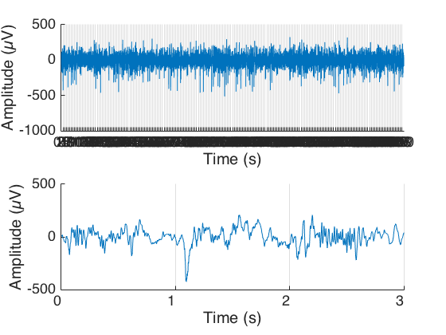
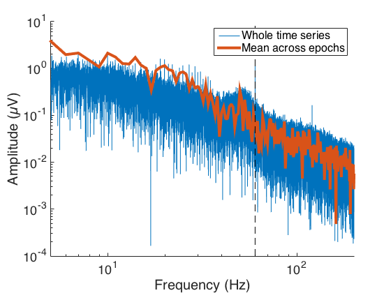
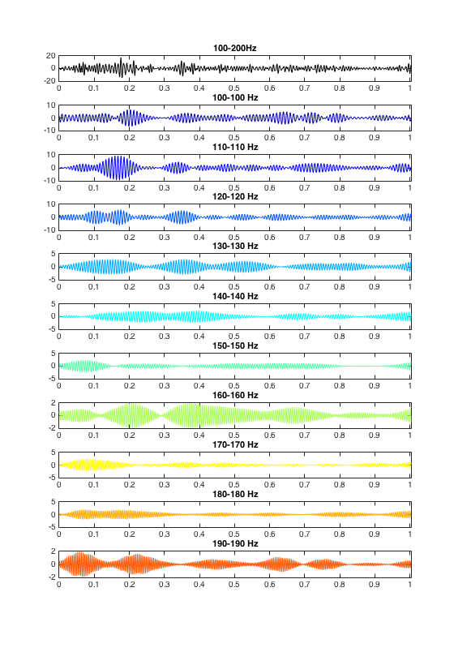
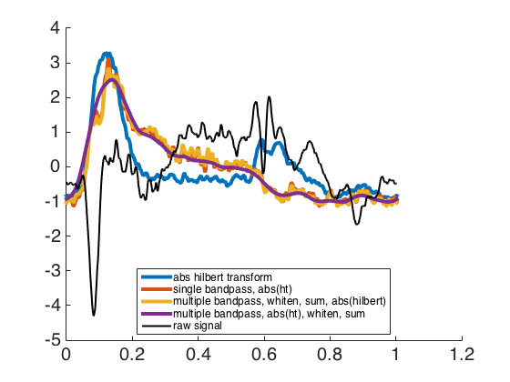

Contents
Load sample data
load ECoG_sample_data_01
t = (1:size(data,1))/srate;
signal.raw = data; clear data;
f = (0:length(t)-1)/max(t);
Epochs
blank = mode(stims);
onsets = round(onsets(stims~=blank));
nt = median(diff(onsets));
epochs = zeros(nt, length(onsets));
for ii = 1:length(onsets)
epochs(:,ii) = onsets(ii)+(0:nt-1);
end
t = t-t(onsets(1));
te = t(onsets(1)+(0:nt-1))';
fe = (0:length(te)-1)/max(te);
Plot time series
figure; set(gcf, 'Color', 'w');
xl(1,:) = t([onsets(1) onsets(end)+nt]);
xl(2,:) = t([onsets(1) onsets(4)]);
for ii = 1:2
subplot(2,1,ii)
set(gca, 'FontSize', 18, 'XTick', t(onsets), 'XGrid', 'on', ...
'XTickLabel', round(t(onsets)))
hold on
plot(t, signal.raw);
xlabel('Time (s)'); ylabel('Amplitude (µV)')
xlim(xl(ii,:));
end
figure; set(gcf, 'Color', 'w');
set(gcf, 'Color', 'w'); set(gca, 'FontSize', 18), hold on
plot(f, abs(fft(signal.raw))/length(t));
plot(fe, abs(fft(mean(signal.raw(epochs),2)))/length(te), ...
'LineWidth', 4);
set(gca, 'XScale', 'log', 'YScale', 'log')
xlim([5 200])
plot([60 60], get(gca, 'YLim'), 'k--')
xlabel('Frequency (Hz)')
ylabel('Amplitude (µV)')
legend('Whole time series', 'Mean across epochs');
 
Define bands for subsequent band pass filtering
band_rg = [100 200];
band_w = 10;
lb = band_rg(1):band_w:band_rg(2)-band_w;
ub = lb+band_w;
bands = [lb; ub]';
disp(bands)
100 110
110 120
120 130
130 140
140 150
150 160
160 170
170 180
180 190
190 200
Filter
signal.bp_single = butterpass_eeglabdata(signal.raw,band_rg,srate);
signal.bp_multi = zeros(length(signal.raw),size(bands,1));
for ii = 1:size(bands,1);
[signal.bp_multi(:,ii)]=butterpass_eeglabdata(signal.raw,bands(ii,:),srate);
end
fH = figure; set(fH, 'Color', 'w')
sz = get(0, 'ScreenSize'); pos = get(fH, 'position');
set(fH, 'Position', [pos(1) sz(1) pos(3) sz(4)]);
idx = onsets(1)+(0:nt-1);
xl = [t(idx(1)) t(idx(end))];
numplots = size(bands,1)+1;
subplot(numplots,1,1)
plot(t(idx), signal.bp_single(idx), 'LineWidth', 1, 'Color', 'k');
xlim(xl)
title(sprintf('%d-%dHz', bands(1), bands(end)));
colors = jet(numplots+1);
for ii = 1:size(bands,1)
subplot(numplots,1,ii+1)
plot(t(idx), signal.bp_multi(idx,ii), 'LineWidth', 1, 'Color', colors(ii,:));
xlim(xl)
title(sprintf('%d-%d Hz', bands(ii,1), bands(ii,1)));
end

Compute time-varying broadband envelopes
signal.bb{1} = abs(hilbert(signal.raw));
str{1} = 'abs hilbert transform';
signal.bb{2} = abs(hilbert(signal.bp_single));
str{2} = 'single bandpass, abs(ht)';
signal.bb{3} = abs(hilbert(sum(1*(signal.bp_multi),2)));
str{3} = 'multiple bandpass, whiten, sum, abs(hilbert)';
signal.bb{4} = sum(1*(abs(hilbert(signal.bp_multi))),2);
str{4} = 'multiple bandpass, abs(ht), whiten, sum';
fH = figure; set(fH, 'Color', 'w')
set(gca, 'FontSize', 20)
hold on
numbb = length(signal.bb);
for ii = 1:numbb
y = mean(signal.bb{ii}(epochs),2);
plot(te, zscore(y), 'LineWidth', 4);
end
plot(te, zscore(mean(signal.raw(epochs),2)), 'k', 'LineWidth', 2);
legend([str 'raw signal'], 'FontSize', 12, 'Location', 'Best')
return
